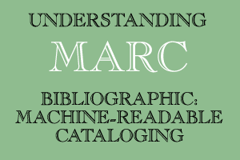

Library of Congress >> MARC >> Understanding MARC |
||

Understanding MARC Bibliographic: Machine-Readable Cataloging Written by Betty Furrie in conjunction with the Data Base Development Department of The Follett Software Company Eighth edition reviewed and edited by the Network Development and MARC Standards Office, Library of Congress Published by the Network Development and MARC Standards Office, Library of Congress
Available from:
Copyright ©2009 The Library of Congress, except within the U.S.A.(Credit must be given when excerpting from this publication). For permission to translate, excerpt, or adapt this publication, contact the Library of Congress, Network Development and MARC Standards Office ([email protected]). Understanding MARC Bibliographic was a copyrighted work originally published by the Follett Software Co. in 1988. Other previous editions are the following: second edition, 1989; third edition, 1990; fourth edition, 1994; fifth edition, 1998; sixth edition, 2000; seventh edition, 2003. |

TABLE
OF CONTENTS
List
of Translations |
|
Go to:
Library of Congress Help Desk ( 09/09/2013 )